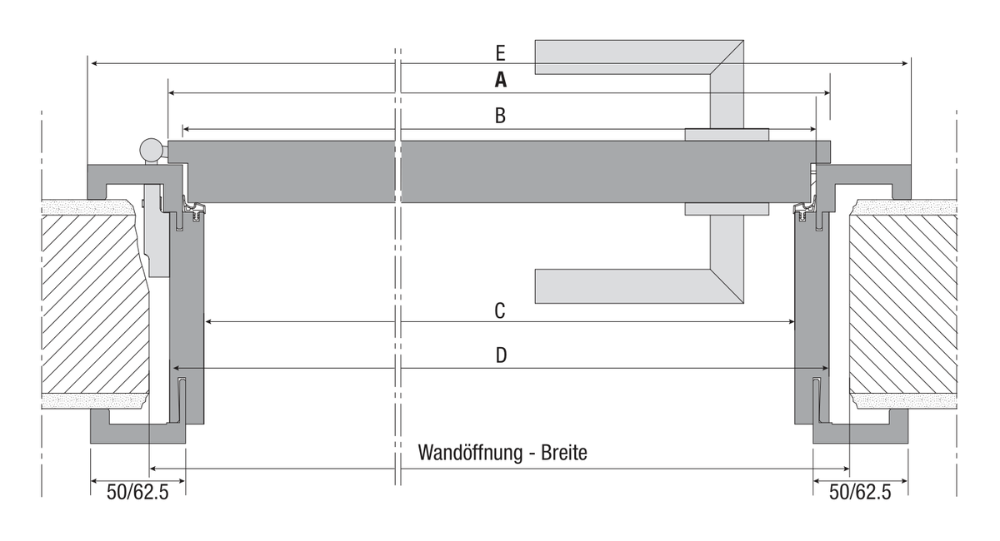

Herholz Futtertüren – Kalkulator
Massermittlung für Herholz-Innentüren nach Norm-Mass-Merkblatt. Rohes Mauerlicht (Neubau/Umbau) oder lichtes Durchgangsmass einer bestehenden Türe eintragen – der Kalkulator gleicht mit der Herholz-Normtabelle ab und ermittelt das Bestellmass der Türe (Mass A).

Schema (nicht massstäblich): A = Bestellmass Türe · B = Futter-Falzmass · C = lichtes Durchgangsmass · D = Aussenkante Futter · E = Aussenkante Zierbekleidung
Was bedeutet DIN Links / DIN Rechts?
Blick auf die geöffnete Türe von vorne (Bandseite): Sind die Bänder (Scharniere) dabei auf der linken Seite sichtbar → DIN Links, auf der rechten Seite → DIN Rechts.
Bestellliste
Öffnet Ihr E-Mail-Programm mit der vollständigen Bestellliste, adressiert an info@menuiserie-delley.ch. Bei sehr langen Listen kann die E-Mail-Länge begrenzt sein – nutzen Sie in diesem Fall „Liste in Zwischenablage kopieren" und fügen Sie den Text manuell in die E-Mail ein.
Alle Masse gemäss Herholz Norm-Mass-Merkblatt Innentüren. Der automatische Normabgleich ersetzt kein Aufmass vor Ort. Preise sind ohne Gewähr; diese Seite dient der Bestellmass-Ermittlung, nicht der Preisberechnung.